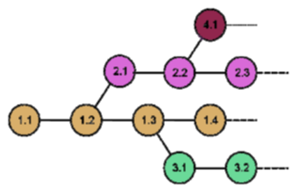
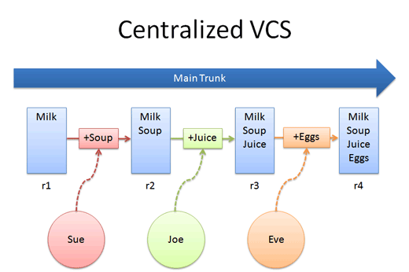
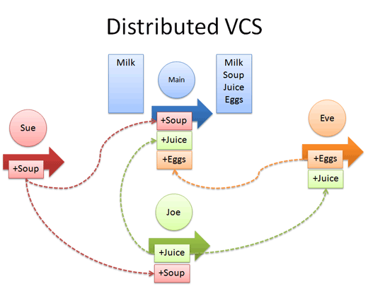
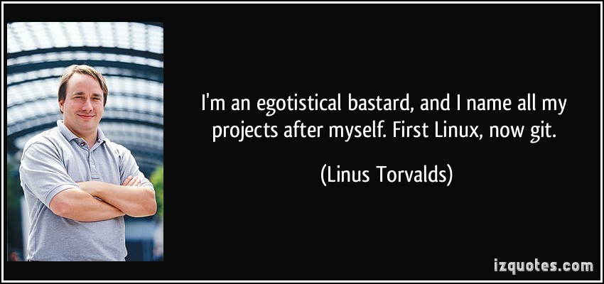
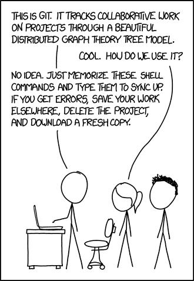
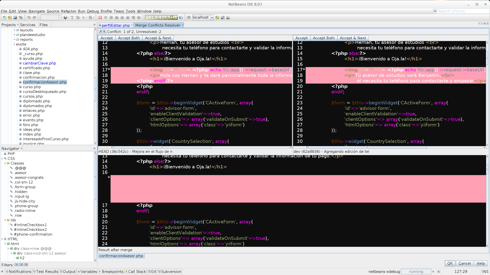

Universidad Nacional Experimental Del Táchira
Decanato De Docencia
Dpto. Ingeniería Informática
Control de versiones
Programación II (Cod. 0415405T)
Temas a tratar
- Aprender los conceptos de control de versiones.
- Conocer el manejo de versiones en el desarrollo de software.
- Aprender el uso de una herramienta de control de versiones.
- Conocer cómo utilizar estas herramientas para apoyar la metodología de desarrollo.
Conocimientos previos
- Conocimientos básicos de programación.
- Conocer el proceso de desarrollo de software.
- Uso de la terminal del sistema operativo.
Objetivo de la clase
- Aprender los conceptos de control de versiones.
- Conocer el manejo de versiones en el desarrollo de software.
- Aprender el uso de una herramienta de control de versiones.
- Conocer cómo utilizar estas herramientas para mejorar el desarrollo.
¡Comencemos!
Introducción
- ¿Cómo manejas los cambios en los archivos durante el desarrollo de un proyecto?
- ¿Cómo intercambias o unes código con tu compañero de desarrollo?
- ¿Cómo llevas los respaldos?
¿Qué es una versión?
El versionado de software es el proceso de asignación de un nombre, código o número único, a un software para indicar su nivel de desarrollo.
Wikipedia (2017)
Control de versiones
Es el manejo y administración de los cambios a documentos, programas de computadora, sitios web y colecciones de información.
A cada uno de estos cambios se le conoce como revisión y se identifican por los siguientes datos: un identificador único, la fecha de creación y autor.
¿Cómo gestionar las versiones?
Sistemas de control de versiones
- Facilitan la gestión de cambios al automatizar el proceso.
- Permiten llevar el historial de cambios de un archivo.
- Mejora el trabajo en equipo.
- Facilita el desarrollo desde lugares remotos
Grafo de control de versiones
Cada nodo en el grafo representa una versión del programa
Arquitectura de un S.C.V
- Centralizado: existe un repositorio central con todos los cambios.
- Descentralizado: los cambios se realizan por medio de p2p (peer to peer).
S.C.V. Centralizado
- Existe un repositorio central que posee todo el código.
- Este repositorio es administrado por gente con privilegios.
- Todas las tareas fuertes son aprobadas por por estos administradores.
- Cada revisión se identifica con un número.
- Se requiere conexión a la red para almacenar/enviar cambios.
Centralizado (ejemplo)
Fuente: Adam Consulting
Distribuido
- Existen varios repositorios "centrales".
- No requiere tanta conexión a la red y por ello mas rápido.
- Permite realizar cambios que no se van a publicar en el repositorio.
- Cada revisión se identifica mediante un código (cada servidor tiene su propia numeración).
Distribuido (ejemplo)
Fuente: Adam Consulting
Implementaciones existentes
- Centralizados: CVS, Subversion, Perforce.
- Distribuidos: GIT, Mercurial, Bazaar, Team Foundation Server.
GIT
- Distribuido
- Creado en el 2005 por Linus Torvalds.
- Enfocado en la integridad de datos y rapidez.
- Cada revisión se identifica mediante un cifrado basado en el historial.
- Compatible con protocolos existentes HTTP, SSH, rsync.
Historia de GIT
Principalmente creado para mantener el proyecto Linux por problemas de copyright con BitKeeper.
Git (Humor)
GIT
Comandos básicos
Iniciar u obtener
un repositorio
Existen 2 formas de hacerlo:
-
Local: se ejecuta el comando:
.git init -
Desde un servidor: se clona todo el repositorio ejecutando:
.git clone URL_DEL_REPOSITORIO
Chequear los cambios en un directorio
-
Para listar los archivos con cambios en su contenido se
hace mediante
git status -
En caso de advertir que algunos archivos no están siendo monitoreados,
se pueden agregar con el commando:
git add RUTA_DEL_ARCHIVO_O_DIRECTORIO
Almacenar los cambios en
el historial (Commit)
-
Al momento de registrar un cambio, se debe adjuntar un breve mensaje
describiendo los cambios realizados, esto permite a los demás programadores
conocer el commit.
git commit -am "Mensaje"
El parametro -a indica que se van a registar todos los cambios
Historial de cambios
-
Para ver todos los commits realizados (el historial de cambios)
se hace mediante:
git log
Enviar cambios al
servidor remoto
-
Una vez que se ha realizado un commit, para enviar
los cambios a un repositorio remoto (en caso de existir), se
realiza usando:
git push origin
Descargar cambios del
servidor remoto
-
Si desea descargar los cambios desde el servidor remoto,
pero sin aplicarlos al código fuente, se hace
mediante:
git fetch -
En caso de querer aplicar los cambios en el código actual:
git pull
Asignación
Investigar sobre:
- Branches (Ramas)
- Merge (unir ramas)
- Conflictos
Conflictos
Ejemplo de un conflicto
Flujo de trabajo